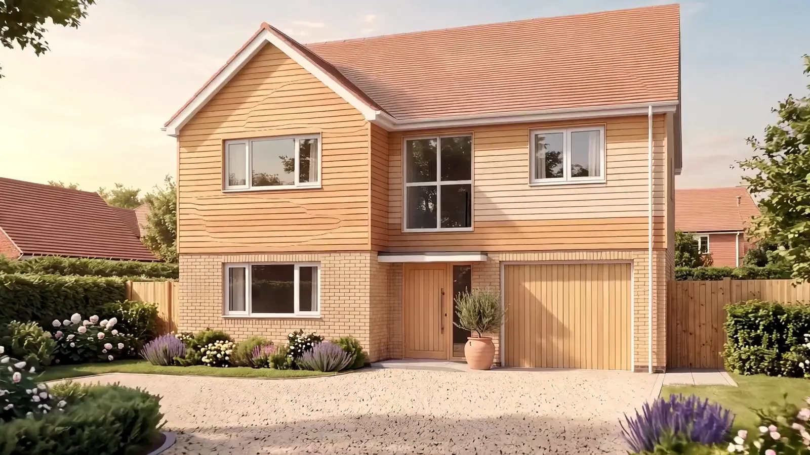
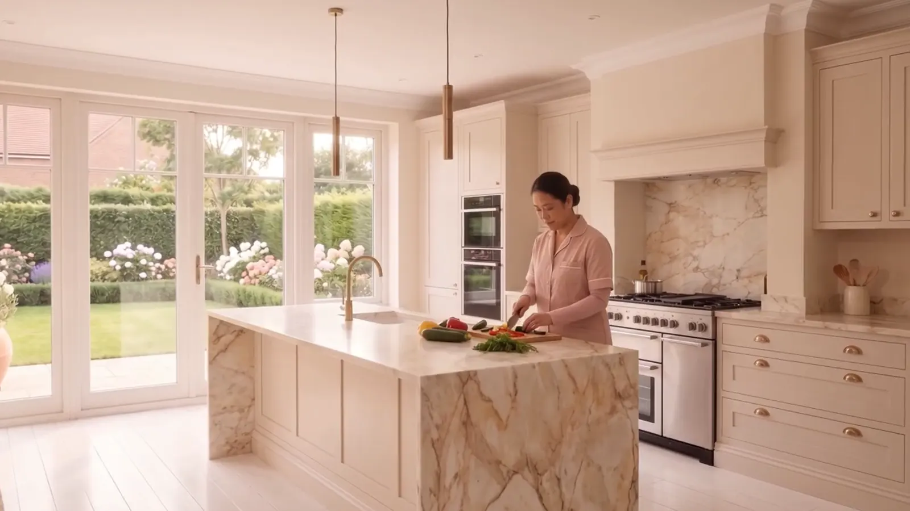
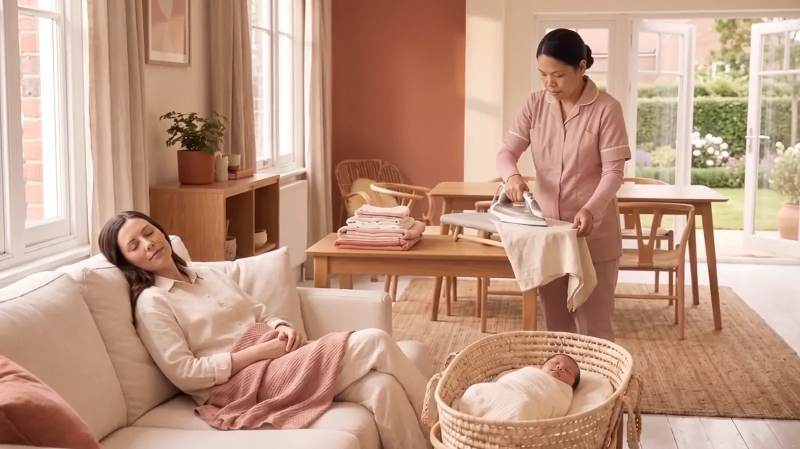
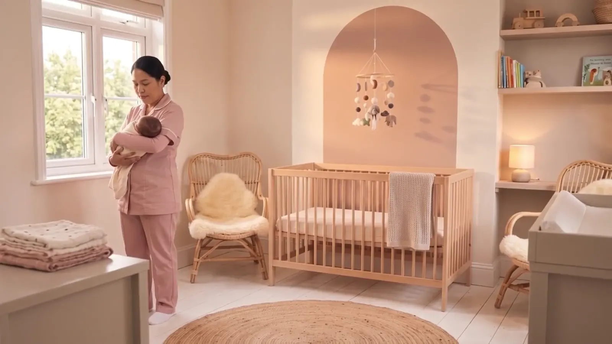
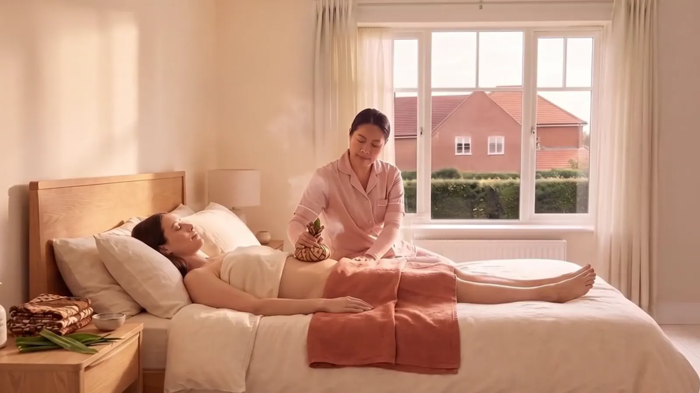

The Care
Scroll and come in.
We cook for you
Warm, nourishing meals made in your own kitchen, so you eat well without lifting a thing.
We keep the house
Laundry, ironing and the small daily jobs. The house keeps running while you rest.
We care for your baby
Feeds, settling and the long nights, so you can finally sleep.
We care for you
Postpartum treatments at home, to help your body recover.
All of it, in one pair of hands.
EnquireFour kinds of care. One person in your home.
- CookingNourishing meals made fresh in your kitchen.
- The houseLaundry, ironing and the everyday jobs.
- Your babyFeeds, settling, changes and nights.
- YouPostpartum treatments that help you recover.
Choose how long we stay, or book a single treatment.